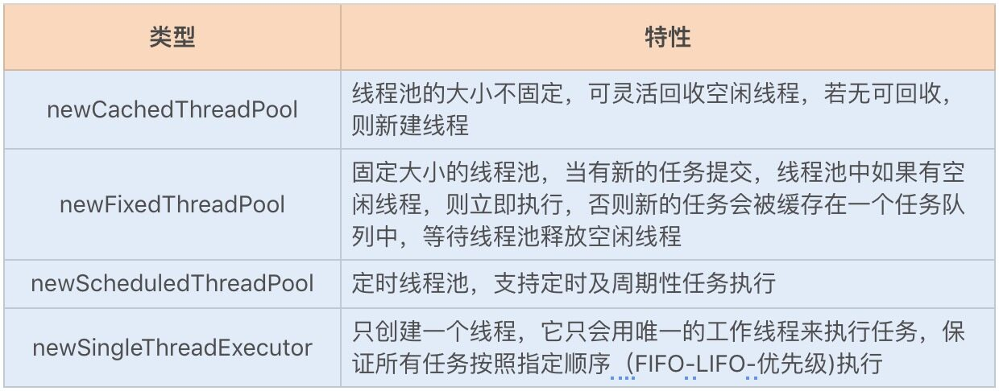
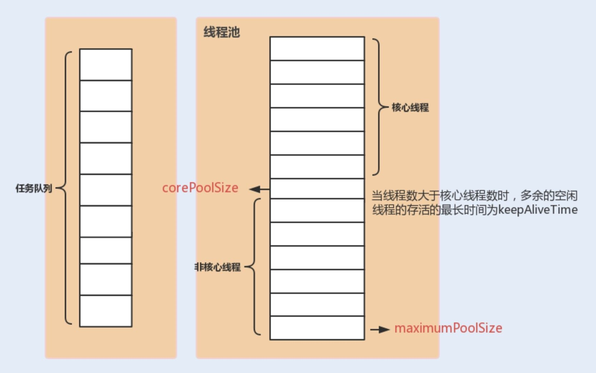
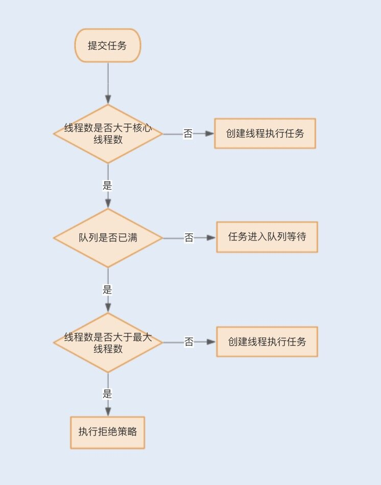
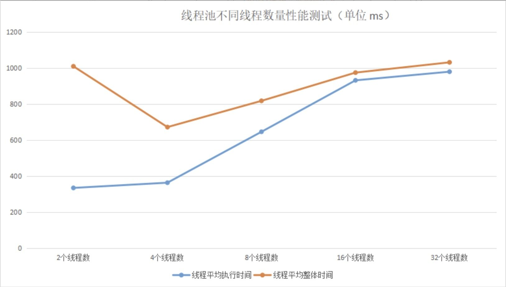
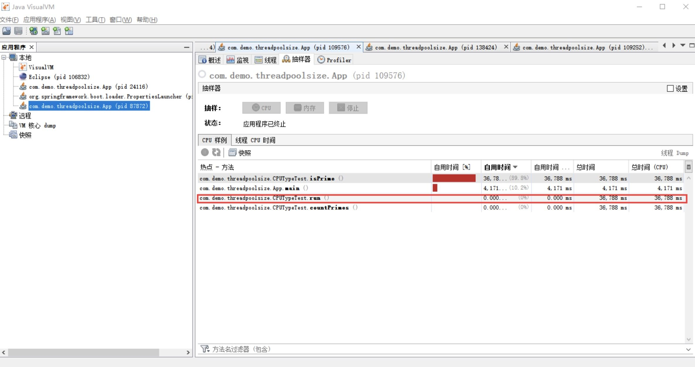

<!DOCTYPE html>

<!-- saved from url=(0046)https://kaiiiz.github.io/hexo-theme-book-demo/ -->

<html xmlns="http://www.w3.org/1999/xhtml">

<head>

    <head>

        <meta http-equiv="Content-Type" content="text/html; charset=UTF-8">

        <meta name="viewport" content="width=device-width, initial-scale=1, maximum-scale=1.0, user-scalable=no">

        <link rel="icon" href="/static/favicon.png">

        <title>18  如何设置线程池大小？.md.html</title>

        <!-- Spectre.css framework -->

        <link rel="stylesheet" href="/static/index.css">

        <!-- theme css & js -->

        <meta name="generator" content="Hexo 4.2.0">

    </head>


<body>


<div class="book-container">

    <div class="book-sidebar">

        <div class="book-brand">

            <a href="/">

                

                <span>技术文章摘抄</span>

            </a>

        </div>

        <div class="book-menu uncollapsible">

            <ul class="uncollapsible">

                <li><a href="/" class="current-tab">首页</a></li>

            </ul>


            <ul class="uncollapsible">

                <li><a href="../">上一级</a></li>

            </ul>


            <ul class="uncollapsible">

                <li>


                    

                    <a href="/专栏/Java并发编程实战/00 开篇词你为什么需要学习并发编程？.md.html">00 开篇词你为什么需要学习并发编程？.md.html</a>


                </li>

                <li>


                    

                    <a href="/专栏/Java并发编程实战/01  如何制定性能调优标准？.md.html">01  如何制定性能调优标准？.md.html</a>


                </li>

                <li>


                    

                    <a href="/专栏/Java并发编程实战/02  如何制定性能调优策略？.md.html">02  如何制定性能调优策略？.md.html</a>


                </li>

                <li>


                    

                    <a href="/专栏/Java并发编程实战/03  字符串性能优化不容小觑，百M内存轻松存储几十G数据.md.html">03  字符串性能优化不容小觑，百M内存轻松存储几十G数据.md.html</a>


                </li>

                <li>


                    

                    <a href="/专栏/Java并发编程实战/04  慎重使用正则表达式.md.html">04  慎重使用正则表达式.md.html</a>


                </li>

                <li>


                    

                    <a href="/专栏/Java并发编程实战/05  ArrayList还是LinkedList？使用不当性能差千倍.md.html">05  ArrayList还是LinkedList？使用不当性能差千倍.md.html</a>


                </li>

                <li>


                    

                    <a href="/专栏/Java并发编程实战/06  Stream如何提高遍历集合效率？.md.html">06  Stream如何提高遍历集合效率？.md.html</a>


                </li>

                <li>


                    

                    <a href="/专栏/Java并发编程实战/07  深入浅出HashMap的设计与优化.md.html">07  深入浅出HashMap的设计与优化.md.html</a>


                </li>

                <li>


                    

                    <a href="/专栏/Java并发编程实战/08  网络通信优化之IO模型：如何解决高并发下IO瓶颈？.md.html">08  网络通信优化之IO模型：如何解决高并发下IO瓶颈？.md.html</a>


                </li>

                <li>


                    

                    <a href="/专栏/Java并发编程实战/09  网络通信优化之序列化：避免使用Java序列化.md.html">09  网络通信优化之序列化：避免使用Java序列化.md.html</a>


                </li>

                <li>


                    

                    <a href="/专栏/Java并发编程实战/10  网络通信优化之通信协议：如何优化RPC网络通信？.md.html">10  网络通信优化之通信协议：如何优化RPC网络通信？.md.html</a>


                </li>

                <li>


                    

                    <a href="/专栏/Java并发编程实战/11  答疑课堂：深入了解NIO的优化实现原理.md.html">11  答疑课堂：深入了解NIO的优化实现原理.md.html</a>


                </li>

                <li>


                    

                    <a href="/专栏/Java并发编程实战/12  多线程之锁优化（上）：深入了解Synchronized同步锁的优化方法.md.html">12  多线程之锁优化（上）：深入了解Synchronized同步锁的优化方法.md.html</a>


                </li>

                <li>


                    

                    <a href="/专栏/Java并发编程实战/13  多线程之锁优化（中）：深入了解Lock同步锁的优化方法.md.html">13  多线程之锁优化（中）：深入了解Lock同步锁的优化方法.md.html</a>


                </li>

                <li>


                    

                    <a href="/专栏/Java并发编程实战/14  多线程之锁优化（下）：使用乐观锁优化并行操作.md.html">14  多线程之锁优化（下）：使用乐观锁优化并行操作.md.html</a>


                </li>

                <li>


                    

                    <a href="/专栏/Java并发编程实战/15  多线程调优（上）：哪些操作导致了上下文切换？.md.html">15  多线程调优（上）：哪些操作导致了上下文切换？.md.html</a>


                </li>

                <li>


                    

                    <a href="/专栏/Java并发编程实战/16  多线程调优（下）：如何优化多线程上下文切换？.md.html">16  多线程调优（下）：如何优化多线程上下文切换？.md.html</a>


                </li>

                <li>


                    

                    <a href="/专栏/Java并发编程实战/17  并发容器的使用：识别不同场景下最优容器.md.html">17  并发容器的使用：识别不同场景下最优容器.md.html</a>


                </li>

                <li>


                    <a class="current-tab" href="/专栏/Java并发编程实战/18  如何设置线程池大小？.md.html">18  如何设置线程池大小？.md.html</a>

                    


                </li>

                <li>


                    

                    <a href="/专栏/Java并发编程实战/19  如何用协程来优化多线程业务？.md.html">19  如何用协程来优化多线程业务？.md.html</a>


                </li>

                <li>


                    

                    <a href="/专栏/Java并发编程实战/20  磨刀不误砍柴工：欲知JVM调优先了解JVM内存模型.md.html">20  磨刀不误砍柴工：欲知JVM调优先了解JVM内存模型.md.html</a>


                </li>

                <li>


                    

                    <a href="/专栏/Java并发编程实战/21  深入JVM即时编译器JIT，优化Java编译.md.html">21  深入JVM即时编译器JIT，优化Java编译.md.html</a>


                </li>

                <li>


                    

                    <a href="/专栏/Java并发编程实战/22  如何优化垃圾回收机制？.md.html">22  如何优化垃圾回收机制？.md.html</a>


                </li>

                <li>


                    

                    <a href="/专栏/Java并发编程实战/23  如何优化JVM内存分配？.md.html">23  如何优化JVM内存分配？.md.html</a>


                </li>

                <li>


                    

                    <a href="/专栏/Java并发编程实战/24  内存持续上升，我该如何排查问题？.md.html">24  内存持续上升，我该如何排查问题？.md.html</a>


                </li>

                <li>


                    

                    <a href="/专栏/Java并发编程实战/25  答疑课堂：模块四热点问题解答.md.html">25  答疑课堂：模块四热点问题解答.md.html</a>


                </li>

                <li>


                    

                    <a href="/专栏/Java并发编程实战/26  单例模式：如何创建单一对象优化系统性能？.md.html">26  单例模式：如何创建单一对象优化系统性能？.md.html</a>


                </li>

                <li>


                    

                    <a href="/专栏/Java并发编程实战/27  原型模式与享元模式：提升系统性能的利器.md.html">27  原型模式与享元模式：提升系统性能的利器.md.html</a>


                </li>

                <li>


                    

                    <a href="/专栏/Java并发编程实战/28  如何使用设计模式优化并发编程？.md.html">28  如何使用设计模式优化并发编程？.md.html</a>


                </li>

                <li>


                    

                    <a href="/专栏/Java并发编程实战/29  生产者消费者模式：电商库存设计优化.md.html">29  生产者消费者模式：电商库存设计优化.md.html</a>


                </li>

                <li>


                    

                    <a href="/专栏/Java并发编程实战/30  装饰器模式：如何优化电商系统中复杂的商品价格策略？.md.html">30  装饰器模式：如何优化电商系统中复杂的商品价格策略？.md.html</a>


                </li>

                <li>


                    

                    <a href="/专栏/Java并发编程实战/31  答疑课堂：模块五思考题集锦.md.html">31  答疑课堂：模块五思考题集锦.md.html</a>


                </li>

                <li>


                    

                    <a href="/专栏/Java并发编程实战/32  MySQL调优之SQL语句：如何写出高性能SQL语句？.md.html">32  MySQL调优之SQL语句：如何写出高性能SQL语句？.md.html</a>


                </li>

                <li>


                    

                    <a href="/专栏/Java并发编程实战/33  MySQL调优之事务：高并发场景下的数据库事务调优.md.html">33  MySQL调优之事务：高并发场景下的数据库事务调优.md.html</a>


                </li>

                <li>


                    

                    <a href="/专栏/Java并发编程实战/34  MySQL调优之索引：索引的失效与优化.md.html">34  MySQL调优之索引：索引的失效与优化.md.html</a>


                </li>

                <li>


                    

                    <a href="/专栏/Java并发编程实战/35  记一次线上SQL死锁事故：如何避免死锁？.md.html">35  记一次线上SQL死锁事故：如何避免死锁？.md.html</a>


                </li>

                <li>


                    

                    <a href="/专栏/Java并发编程实战/36  什么时候需要分表分库？.md.html">36  什么时候需要分表分库？.md.html</a>


                </li>

                <li>


                    

                    <a href="/专栏/Java并发编程实战/37  电商系统表设计优化案例分析.md.html">37  电商系统表设计优化案例分析.md.html</a>


                </li>

                <li>


                    

                    <a href="/专栏/Java并发编程实战/38  数据库参数设置优化，失之毫厘差之千里.md.html">38  数据库参数设置优化，失之毫厘差之千里.md.html</a>


                </li>

                <li>


                    

                    <a href="/专栏/Java并发编程实战/39  答疑课堂：MySQL中InnoDB的知识点串讲.md.html">39  答疑课堂：MySQL中InnoDB的知识点串讲.md.html</a>


                </li>

                <li>


                    

                    <a href="/专栏/Java并发编程实战/41  如何设计更优的分布式锁？.md.html">41  如何设计更优的分布式锁？.md.html</a>


                </li>

                <li>


                    

                    <a href="/专栏/Java并发编程实战/42  电商系统的分布式事务调优.md.html">42  电商系统的分布式事务调优.md.html</a>


                </li>

                <li>


                    

                    <a href="/专栏/Java并发编程实战/43  如何使用缓存优化系统性能？.md.html">43  如何使用缓存优化系统性能？.md.html</a>


                </li>

                <li>


                    

                    <a href="/专栏/Java并发编程实战/44  记一次双十一抢购性能瓶颈调优.md.html">44  记一次双十一抢购性能瓶颈调优.md.html</a>


                </li>

                <li>


                    

                    <a href="/专栏/Java并发编程实战/加餐  什么是数据的强、弱一致性？.md.html">加餐  什么是数据的强、弱一致性？.md.html</a>


                </li>

                <li>


                    

                    <a href="/专栏/Java并发编程实战/加餐  推荐几款常用的性能测试工具.md.html">加餐  推荐几款常用的性能测试工具.md.html</a>


                </li>

                <li>


                    

                    <a href="/专栏/Java并发编程实战/答疑课堂：模块三热点问题解答.md.html">答疑课堂：模块三热点问题解答.md.html</a>


                </li>

                <li>


                    

                    <a href="/专栏/Java并发编程实战/结束语  栉风沐雨，砥砺前行！.md.html">结束语  栉风沐雨，砥砺前行！.md.html</a>


                </li>

            </ul>


        </div>

    </div>


    <div class="sidebar-toggle" onclick="sidebar_toggle()" onmouseover="add_inner()" onmouseleave="remove_inner()">

        <div class="sidebar-toggle-inner"></div>

    </div>


    <script>

        function add_inner() {

            let inner = document.querySelector('.sidebar-toggle-inner')

            inner.classList.add('show')

        }


        function remove_inner() {

            let inner = document.querySelector('.sidebar-toggle-inner')

            inner.classList.remove('show')

        }


        function sidebar_toggle() {

            let sidebar_toggle = document.querySelector('.sidebar-toggle')

            let sidebar = document.querySelector('.book-sidebar')

            let content = document.querySelector('.off-canvas-content')

            if (sidebar_toggle.classList.contains('extend')) { // show

                sidebar_toggle.classList.remove('extend')

                sidebar.classList.remove('hide')

                content.classList.remove('extend')

            } else { // hide

                sidebar_toggle.classList.add('extend')

                sidebar.classList.add('hide')

                content.classList.add('extend')

            }

        }


function open_sidebar() {

    let sidebar = document.querySelector('.book-sidebar')

    let overlay = document.querySelector('.off-canvas-overlay')

    sidebar.classList.add('show')

    overlay.classList.add('show')

}

function hide_canvas() {

    let sidebar = document.querySelector('.book-sidebar')

    let overlay = document.querySelector('.off-canvas-overlay')

    sidebar.classList.remove('show')

    overlay.classList.remove('show')

}


    </script>


    <div class="off-canvas-content">

        <div class="columns">

            <div class="column col-12 col-lg-12">

                <div class="book-navbar">

                    <!-- For Responsive Layout -->

                    <header class="navbar">

                        <section class="navbar-section">

                            <a onclick="open_sidebar()">

                                <i class="icon icon-menu"></i>

                            </a>

                        </section>

                    </header>

                </div>

                <div class="book-content" style="max-width: 960px; margin: 0 auto;

    overflow-x: auto;

    overflow-y: hidden;">

                    <div class="book-post">

                        <p id="tip" align="center"></p>

                        <div><h1>18  如何设置线程池大小？</h1>

<p>你好，我是刘超。</p>

<p>还记得我在 16 讲中说过“线程池的线程数量设置过多会导致线程竞争激烈”吗？今天再补一句，如果线程数量设置过少的话，还会导致系统无法充分利用计算机资源。那么如何设置才不会影响系统性能呢？</p>

<p>其实线程池的设置是有方法的，不是凭借简单的估算来决定的。今天我们就来看看究竟有哪些计算方法可以复用，线程池中各个参数之间又存在怎样的关系。</p>

<h2>线程池原理</h2>

<p>开始优化之前，我们先来看看线程池的实现原理，有助于你更好地理解后面的内容。</p>

<p>在 HotSpot VM 的线程模型中，Java 线程被一对一映射为内核线程。Java 在使用线程执行程序时，需要创建一个内核线程；当该 Java 线程被终止时，这个内核线程也会被回收。因此 Java 线程的创建与销毁将会消耗一定的计算机资源，从而增加系统的性能开销。</p>

<p>除此之外，大量创建线程同样会给系统带来性能问题，因为内存和 CPU 资源都将被线程抢占，如果处理不当，就会发生内存溢出、CPU 使用率超负荷等问题。</p>

<p>为了解决上述两类问题，Java 提供了线程池概念，对于频繁创建线程的业务场景，线程池可以创建固定的线程数量，并且在操作系统底层，轻量级进程将会把这些线程映射到内核。</p>

<p>线程池可以提高线程复用，又可以固定最大线程使用量，防止无限制地创建线程。当程序提交一个任务需要一个线程时，会去线程池中查找是否有空闲的线程，若有，则直接使用线程池中的线程工作，若没有，会去判断当前已创建的线程数量是否超过最大线程数量，如未超过，则创建新线程，如已超过，则进行排队等待或者直接抛出异常。</p>

<h2>线程池框架 Executor</h2>

<p>Java 最开始提供了 ThreadPool 实现了线程池，为了更好地实现用户级的线程调度，更有效地帮助开发人员进行多线程开发，Java 提供了一套 Executor 框架。</p>

<p>这个框架中包括了 ScheduledThreadPoolExecutor 和 ThreadPoolExecutor 两个核心线程池。前者是用来定时执行任务，后者是用来执行被提交的任务。鉴于这两个线程池的核心原理是一样的，下面我们就重点看看 ThreadPoolExecutor 类是如何实现线程池的。</p>

<p>Executors 实现了以下四种类型的 ThreadPoolExecutor：</p>

<p></p>

<p>Executors 利用工厂模式实现的四种线程池，我们在使用的时候需要结合生产环境下的实际场景。不过我不太推荐使用它们，因为选择使用 Executors 提供的工厂类，将会忽略很多线程池的参数设置，工厂类一旦选择设置默认参数，就很容易导致无法调优参数设置，从而产生性能问题或者资源浪费。</p>

<p>这里我建议你使用 ThreadPoolExecutor 自我定制一套线程池。进入四种工厂类后，我们可以发现除了 newScheduledThreadPool 类，其它类均使用了 ThreadPoolExecutor 类进行实现，你可以通过以下代码简单看下该方法：</p>

<pre><code>    public ThreadPoolExecutor(int corePoolSize,// 线程池的核心线程数量

                              int maximumPoolSize,// 线程池的最大线程数

                              long keepAliveTime,// 当线程数大于核心线程数时，多余的空闲线程存活的最长时间

                              TimeUnit unit,// 时间单位

                              BlockingQueue&lt;Runnable&gt; workQueue,// 任务队列，用来储存等待执行任务的队列

                              ThreadFactory threadFactory,// 线程工厂，用来创建线程，一般默认即可

                              RejectedExecutionHandler handler) // 拒绝策略，当提交的任务过多而不能及时处理时，我们可以定制策略来处理任务

</code></pre>

<p>我们还可以通过下面这张图来了解下线程池中各个参数的相互关系：</p>

<p></p>

<p>通过上图，我们发现线程池有两个线程数的设置，一个为核心线程数，一个为最大线程数。在创建完线程池之后，默认情况下，线程池中并没有任何线程，等到有任务来才创建线程去执行任务。</p>

<p>但有一种情况排除在外，就是调用 prestartAllCoreThreads() 或者 prestartCoreThread() 方法的话，可以提前创建等于核心线程数的线程数量，这种方式被称为预热，在抢购系统中就经常被用到。</p>

<p>当创建的线程数等于 corePoolSize 时，提交的任务会被加入到设置的阻塞队列中。当队列满了，会创建线程执行任务，直到线程池中的数量等于 maximumPoolSize。</p>

<p>当线程数量已经等于 maximumPoolSize 时， 新提交的任务无法加入到等待队列，也无法创建非核心线程直接执行，我们又没有为线程池设置拒绝策略，这时线程池就会抛出 RejectedExecutionException 异常，即线程池拒绝接受这个任务。</p>

<p>当线程池中创建的线程数量超过设置的 corePoolSize，在某些线程处理完任务后，如果等待 keepAliveTime 时间后仍然没有新的任务分配给它，那么这个线程将会被回收。线程池回收线程时，会对所谓的“核心线程”和“非核心线程”一视同仁，直到线程池中线程的数量等于设置的 corePoolSize 参数，回收过程才会停止。</p>

<p>即使是 corePoolSize 线程，在一些非核心业务的线程池中，如果长时间地占用线程数量，也可能会影响到核心业务的线程池，这个时候就需要把没有分配任务的线程回收掉。</p>

<p>我们可以通过 allowCoreThreadTimeOut 设置项要求线程池：将包括“核心线程”在内的，没有任务分配的所有线程，在等待 keepAliveTime 时间后全部回收掉。</p>

<p>我们可以通过下面这张图来了解下线程池的线程分配流程：</p>

<p></p>

<h2>计算线程数量</h2>

<p>了解完线程池的实现原理和框架，我们就可以动手实践优化线程池的设置了。</p>

<p>我们知道，环境具有多变性，设置一个绝对精准的线程数其实是不大可能的，但我们可以通过一些实际操作因素来计算出一个合理的线程数，避免由于线程池设置不合理而导致的性能问题。下面我们就来看看具体的计算方法。</p>

<p>一般多线程执行的任务类型可以分为 CPU 密集型和 I/O 密集型，根据不同的任务类型，我们计算线程数的方法也不一样。</p>

<p>**CPU 密集型任务：**这种任务消耗的主要是 CPU 资源，可以将线程数设置为 N（CPU 核心数）+1，比 CPU 核心数多出来的一个线程是为了防止线程偶发的缺页中断，或者其它原因导致的任务暂停而带来的影响。一旦任务暂停，CPU 就会处于空闲状态，而在这种情况下多出来的一个线程就可以充分利用 CPU 的空闲时间。</p>

<p>下面我们用一个例子来验证下这个方法的可行性，通过观察 CPU 密集型任务在不同线程数下的性能情况就可以得出结果，你可以点击<a href="https://github.com/nickliuchao/threadpollsizetest">Github</a>下载到本地运行测试：</p>

<pre><code>public class CPUTypeTest implements Runnable {

 

	// 整体执行时间，包括在队列中等待的时间

	List&lt;Long&gt; wholeTimeList;

	// 真正执行时间

	List&lt;Long&gt; runTimeList;

	

	private long initStartTime = 0;

	

	/**

	 * 构造函数

	 * @param runTimeList

	 * @param wholeTimeList

	 */

	public CPUTypeTest(List&lt;Long&gt; runTimeList, List&lt;Long&gt; wholeTimeList) {

		initStartTime = System.currentTimeMillis();

		this.runTimeList = runTimeList;

		this.wholeTimeList = wholeTimeList;

	}

	

	/**

	 * 判断素数

	 * @param number

	 * @return

	 */

	public boolean isPrime(final int number) {

		if (number &lt;= 1)

			return false;

 

 

		for (int i = 2; i &lt;= Math.sqrt(number); i++) {

			if (number % i == 0)

				return false;

		}

		return true;

	}

 

	/**

	 * 計算素数

	 * @param number

	 * @return

	 */

	public int countPrimes(final int lower, final int upper) {

		int total = 0;

		for (int i = lower; i &lt;= upper; i++) {

			if (isPrime(i))

				total++;

		}

		return total;

	}

 

	public void run() {

		long start = System.currentTimeMillis();

		countPrimes(1, 1000000);

		long end = System.currentTimeMillis();

 

 

		long wholeTime = end - initStartTime;

		long runTime = end - start;

		wholeTimeList.add(wholeTime);

		runTimeList.add(runTime);

		System.out.println(&quot; 单个线程花费时间：&quot; + (end - start));

	}

}

</code></pre>

<p>测试代码在 4 核 intel i5 CPU 机器上的运行时间变化如下：</p>

<p></p>

<p>综上可知：当线程数量太小，同一时间大量请求将被阻塞在线程队列中排队等待执行线程，此时 CPU 没有得到充分利用；当线程数量太大，被创建的执行线程同时在争取 CPU 资源，又会导致大量的上下文切换，从而增加线程的执行时间，影响了整体执行效率。通过测试可知，4~6 个线程数是最合适的。</p>

<p>**I/O 密集型任务：**这种任务应用起来，系统会用大部分的时间来处理 I/O 交互，而线程在处理 I/O 的时间段内不会占用 CPU 来处理，这时就可以将 CPU 交出给其它线程使用。因此在 I/O 密集型任务的应用中，我们可以多配置一些线程，具体的计算方法是 2N。</p>

<p>这里我们还是通过一个例子来验证下这个公式是否可以标准化：</p>

<pre><code>public class IOTypeTest implements Runnable {

 

	// 整体执行时间，包括在队列中等待的时间

	Vector&lt;Long&gt; wholeTimeList;

	// 真正执行时间

	Vector&lt;Long&gt; runTimeList;

	

	private long initStartTime = 0;

	

	/**

	 * 构造函数

	 * @param runTimeList

	 * @param wholeTimeList

	 */

	public IOTypeTest(Vector&lt;Long&gt; runTimeList, Vector&lt;Long&gt; wholeTimeList) {

		initStartTime = System.currentTimeMillis();

		this.runTimeList = runTimeList;

		this.wholeTimeList = wholeTimeList;

	}

	

	/**

	 *IO 操作

	 * @param number

	 * @return

	 * @throws IOException 

	 */

	public void readAndWrite() throws IOException {

		File sourceFile = new File(&quot;D:/test.txt&quot;);

        // 创建输入流

        BufferedReader input = new BufferedReader(new FileReader(sourceFile));

        // 读取源文件, 写入到新的文件

        String line = null;

        while((line = input.readLine()) != null){

            //System.out.println(line);

        }

        // 关闭输入输出流

        input.close();

	}

 

	public void run() {

		long start = System.currentTimeMillis();

		try {

			readAndWrite();

		} catch (IOException e) {

			// TODO Auto-generated catch block

			e.printStackTrace();

		}

		long end = System.currentTimeMillis();

 

 

		long wholeTime = end - initStartTime;

		long runTime = end - start;

		wholeTimeList.add(wholeTime);

		runTimeList.add(runTime);

		System.out.println(&quot; 单个线程花费时间：&quot; + (end - start));

	}

}

</code></pre>

<p>备注：由于测试代码读取 2MB 大小的文件，涉及到大内存，所以在运行之前，我们需要调整 JVM 的堆内存空间：-Xms4g -Xmx4g，避免发生频繁的 FullGC，影响测试结果。</p>

<p></p>

<p>通过测试结果，我们可以看到每个线程所花费的时间。当线程数量在 8 时，线程平均执行时间是最佳的，这个线程数量和我们的计算公式所得的结果就差不多。</p>

<p>看完以上两种情况下的线程计算方法，你可能还想说，在平常的应用场景中，我们常常遇不到这两种极端情况，<strong>那么碰上一些常规的业务操作，比如，通过一个线程池实现向用户定时推送消息的业务，我们又该如何设置线程池的数量呢？</strong></p>

<p>此时我们可以参考以下公式来计算线程数：</p>

<pre><code>线程数 =N（CPU 核数）*（1+WT（线程等待时间）/ST（线程时间运行时间））


</code></pre>

<p>我们可以通过 JDK 自带的工具 VisualVM 来查看 WT/ST 比例，以下例子是基于运行纯 CPU 运算的例子，我们可以看到：</p>

<pre><code>WT（线程等待时间）= 36788ms [线程运行总时间] - 36788ms[ST（线程时间运行时间）]= 0

线程数 =N（CPU 核数）*（1+ 0 [WT（线程等待时间）]/36788ms[ST（线程时间运行时间）]）= N（CPU 核数）

</code></pre>

<p>这跟我们之前通过 CPU 密集型的计算公式 N+1 所得出的结果差不多。</p>

<p></p>

<p>综合来看，我们可以根据自己的业务场景，从“N+1”和“2N”两个公式中选出一个适合的，计算出一个大概的线程数量，之后通过实际压测，逐渐往“增大线程数量”和“减小线程数量”这两个方向调整，然后观察整体的处理时间变化，最终确定一个具体的线程数量。</p>

<h2>总结</h2>

<p>今天我们主要学习了线程池的实现原理，Java 线程的创建和消耗会给系统带来性能开销，因此 Java 提供了线程池来复用线程，提高程序的并发效率。</p>

<p>Java 通过用户线程与内核线程结合的 1:1 线程模型来实现，Java 将线程的调度和管理设置在了用户态，提供了一套 Executor 框架来帮助开发人员提高效率。Executor 框架不仅包括了线程池的管理，还提供了线程工厂、队列以及拒绝策略等，可以说 Executor 框架为并发编程提供了一个完善的架构体系。</p>

<p>在不同的业务场景以及不同配置的部署机器中，线程池的线程数量设置是不一样的。其设置不宜过大，也不宜过小，要根据具体情况，计算出一个大概的数值，再通过实际的性能测试，计算出一个合理的线程数量。</p>

<p>我们要提高线程池的处理能力，一定要先保证一个合理的线程数量，也就是保证 CPU 处理线程的最大化。在此前提下，我们再增大线程池队列，通过队列将来不及处理的线程缓存起来。在设置缓存队列时，我们要尽量使用一个有界队列，以防因队列过大而导致的内存溢出问题。</p>

<h2>思考题</h2>

<p>在程序中，除了并行段代码，还有串行段代码。那么当程序同时存在串行和并行操作时，优化并行操作是不是优化系统的关键呢？</p>

</div>

                    </div>

                    <div>

                        <div style="float: left">

                            <a href="/专栏/Java并发编程实战/17  并发容器的使用：识别不同场景下最优容器.md.html">上一页</a>

                        </div>

                        <div style="float: right">

                            <a href="/专栏/Java并发编程实战/19  如何用协程来优化多线程业务？.md.html">下一页</a>

                        </div>

                    </div>


                </div>

            </div>

        </div>

    </div>


    <a class="off-canvas-overlay" onclick="hide_canvas()"></a>

</div>

<script defer src="https://static.cloudflareinsights.com/beacon.min.js/v652eace1692a40cfa3763df669d7439c1639079717194" integrity="sha512-Gi7xpJR8tSkrpF7aordPZQlW2DLtzUlZcumS8dMQjwDHEnw9I7ZLyiOj/6tZStRBGtGgN6ceN6cMH8z7etPGlw==" data-cf-beacon='{"rayId":"70997181be5b3d60","version":"2021.12.0","r":1,"token":"1f5d475227ce4f0089a7cff1ab17c0f5","si":100}' crossorigin="anonymous"></script>

</body>

<!-- Global site tag (gtag.js) - Google Analytics -->

<script async src="https://www.googletagmanager.com/gtag/js?id=G-NPSEEVD756"></script>

<script>

    window.dataLayer = window.dataLayer || [];


    function gtag() {

        dataLayer.push(arguments);

    }


    gtag('js', new Date());

    gtag('config', 'G-NPSEEVD756');

    var path = window.location.pathname

    var cookie = getCookie("lastPath");

    console.log(path)

    if (path.replace("/", "") === "") {

        if (cookie.replace("/", "") !== "") {

            console.log(cookie)

            document.getElementById("tip").innerHTML = "<a href='" + cookie + "'>跳转到上次进度</a>"

        }

    } else {

        setCookie("lastPath", path)

    }


    function setCookie(cname, cvalue) {

        var d = new Date();

        d.setTime(d.getTime() + (180 * 24 * 60 * 60 * 1000));

        var expires = "expires=" + d.toGMTString();

        document.cookie = cname + "=" + cvalue + "; " + expires + ";path = /";

    }


    function getCookie(cname) {

        var name = cname + "=";

        var ca = document.cookie.split(';');

        for (var i = 0; i < ca.length; i++) {

            var c = ca[i].trim();

            if (c.indexOf(name) === 0) return c.substring(name.length, c.length);

        }

        return "";

    }


</script>


</html>

